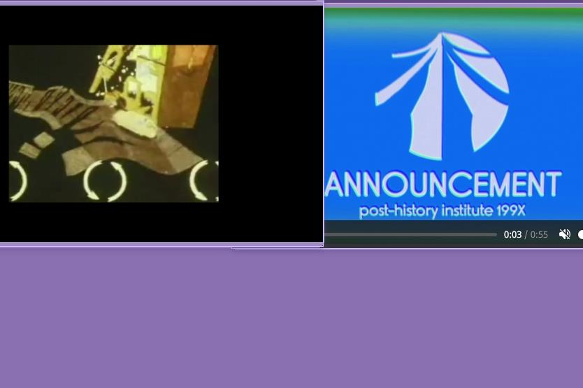
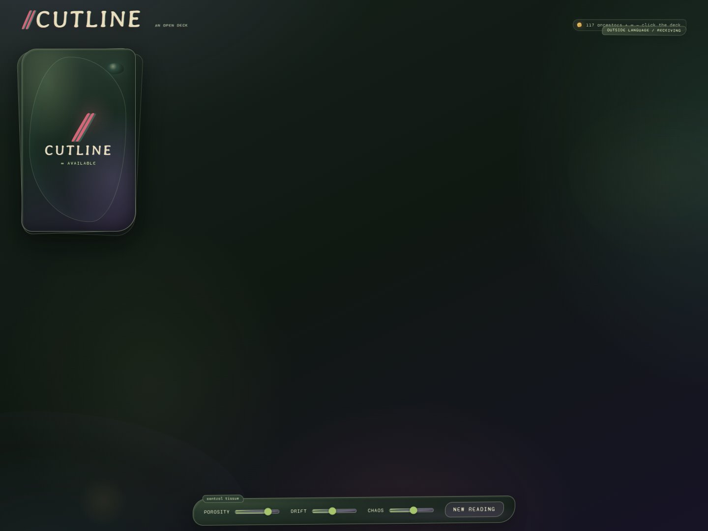
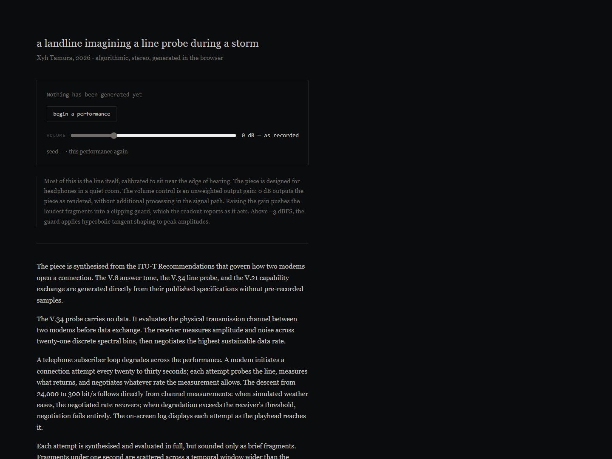
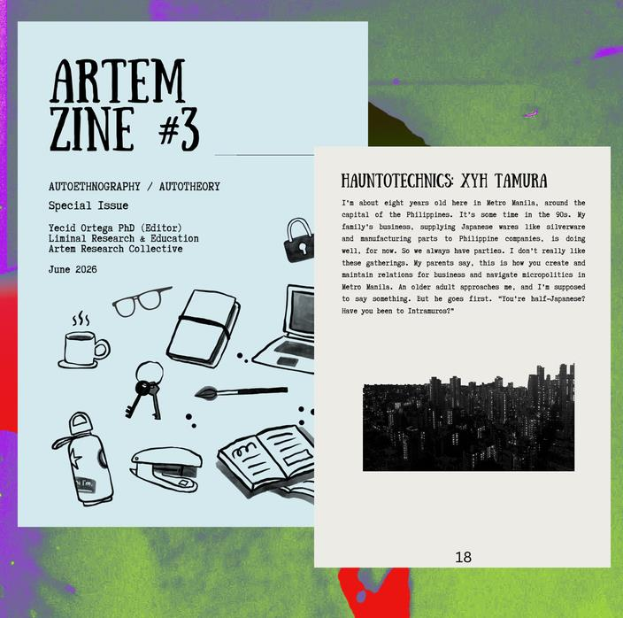
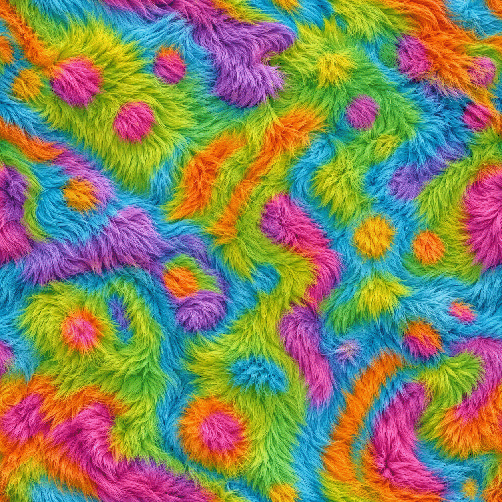

Xyh Tamura is a Filipino/Ilonggo-Japanese artist-researcher and composer based in Manila. The practice investigates memory, relational personhood, and the presence of absence across electronic literature, sound, and digital traces. In dialogue with TeleAbsence, the work engages loss and separation through surviving traces without reconstructing synthetic likenesses of the absent. Filipino relational concepts of loób (shared interiority) and kapwa (shared identity) frame virtuality not as a substitute for the physical, but as a theory of what survives a body.
The present as a shore between inaccessible pasts and futures · memory, deep time, and ancestral adjacency
p20-aThe panoramap20-dbody clocksp20-eThe World
p20-fDream Window Returnp20-bA work from the suitep20-gVideopoem still
Of Another Shore is an intermedia web artwork and electronic literature suite structured as a single continuous scrolling panorama. Visitors navigate through five vertical ecological zones containing interactive objects that launch individual poems, video works, and simulations.
The suite draws on Filipino-Japanese family inheritance, loss, and deep time. Interactive modules such as Dream Window Return and body clocks hold memory as an addressable territory, activating relations across distance and absence through surviving digital traces, seasonal rhythms, and non-simulated encounters.
Xyh Tamura2
Electronic literature · disaster afterlives
Shook 2024–2025
Afterlives of disaster · 1990 Luzon, 2011 Tōhoku, and 2020 Taal events · inherited trauma through interfaces
p01-j-shookShook interface

shook-archivalArchival footage
Shook is an interactive electronic literature work and archival interface documenting geophysical disasters across the Pacific Rim, focusing on the 1990 Luzon earthquake, 2011 Tōhoku disaster, and 2020 Taal eruption.
The browser application presents raw archival news broadcasts, seismographic traces, and blackout-redacted poetry across movable windows, examining how catastrophic rupture and collective trauma survive across generations through mediated commemoration.
Xyh Tamura3
Algorithmic poetry · divination as interface
Cutline 2025–2026
Live generative oracle deck assembled from public network fragments · divination as interface

cutline-fullCutline
Cutline is an interactive browser oracle deck that queries live public APIs for text fragments, cutting and assembling the retrieved data into poetic stanzas. Users draw cards and interpret juxtapositions of live network language as an omen.
The work engages presence of absence without reconstructing synthetic likenesses of the absent: encounters with memory and loss are mediated through public linguistic traces and the reader's active interpretation rather than AI-generated simulations of the dead.
Xyh Tamura4
Research · philosophy of technology
From Interiority to Interaction 2024–2025
Published in Philosophy & Digitality, 2025 · Denkwerkstatt Berlin
p05-aFrom Interiority to Interactionp05-dArticle opening
A journal article analyzing how human communities attribute personhood and agency to synthetic entities through social, ritual, and linguistic interaction rather than resemblance to human biological form.
Analyzing cases including Sony’s AIBO robot funerals in Japanese temples, the android priest Mindar at Kōdai-ji, and Geminoid telepresence androids, the paper demonstrates that presence and agency are relational effects produced through communicative affordances and social framing.
Xyh Tamura5
Research · affect and social philosophy
Feeling Together 2025
Presented at Nanyang Technological University, 2025
p16-aFeeling Togetherp16-cSeminar session
An academic research paper presented at Nanyang Technological University investigating relational models of emotion, selfhood, and intersubjectivity in Philippine social philosophy.
Through qualitative interviews, literary texts, and autoethnography in Metro Manila, the study examines how the Tagalog concepts of loób (relational interiority) and kapwa (shared identity) sustain interpersonal connection across distance, bereavement, and migration.
Xyh Tamura6
Research, place, and installation
Tanim-Kalye 2025
Quezon City Biennial · exhibited at Carinderia Sefali, Krus na Ligas · developed with residents, the local governing unit, and botanical experts from the UP Institute of Biology
p14-aInstallation view
p14-bBotanical glyph map Ip14-cBotanical glyph map II
A site-specific installation and participatory research project commissioned for the Quezon City Biennial and exhibited at Carinderia Sefali in Krus na Ligas. Created with botanists from the UP Institute of Biology, local officials, and neighborhood elders, the project maps medicinal and culturally significant plants across the neighborhood street grid using high-contrast botanical film prints mounted on transparent acetate window displays.
p14-dLigas entryp14-eHerbarium doorp14-fBarangay hallp14-gWith a residentp14-hHousehold print, 1969
Fieldwork — herbarium archives, barangay hall, community interviews, and a 1969 household photograph.
Xyh Tamura7
Film and live score
Manifest 2024–2025
Short film and videopoem by Bea Mariano and Xyh Tamura · live score by Xyh Tamura · presented at Search Mindscape Foundation and WHYNoT
p09-aManifest still Ip09-cFilm still showing the oceanic and construction montage
Manifest is a 12-minute short film, videopoem, and live performance score created with filmmaker Bea Mariano. The film montages deep-sea footage of the USS Samuel B. Roberts shipwreck, Metro Manila high-rise construction, microbial growth, and historical military reels. The live performance score pairs analog synthesizers, voice, and hydrophone recordings, generating asynchronous drones and rhythmic pulses that respond to screen cuts.
p09-bManifest still IIp09-dScreening and programme
Screened to an audience, and at WHYNoT with the printed programme.
Xyh Tamura8
p08-bInstallation viewp08-cGenerated archipelago
Installation · algorithmic poetry
Insulae Incognita 2025→
98B COLLABoratory · curated by Dayang Yraola
An interactive gallery installation powered by an Orange Pi single-board computer, generating an evolving digital archipelago from Unicode glyphs tied to precolonial Philippine trade routes.

landline-leadlandline
Network poetics · DSP synthesis
a landline imagining a line probe during a storm 2026
ITU-T V.34 DSP handshake and degradation synthesis
An algorithmic music composition and score modeled on ITU-T V.34 modem handshake protocols. The software simulates telephone line degradation and modem frequency negotiation to compose continuous electronic audio.
Xyh Tamura9

hauntotechnics-leadHauntotechnics
Hauntology · media archaeology
Hauntotechnics 2025
Essay on spectral technologies and digital survival
Hauntotechnics is an illustrated essay investigating digital memory and media archaeology. The text explores how digital files, abandonware, and archived network traces preserve human presence and relational memory without requiring physical preservation or biometric simulation.

critterances-leadCritterances
Creaturely language · posthuman interaction
Critterances 2025–2026
Non-anthropocentric creature communication interface
Critterances is an interactive creature communication interface. Users interact with autonomous virtual organisms through non-verbal acoustic signals, phonemic collisions, and environmental feedback loops.